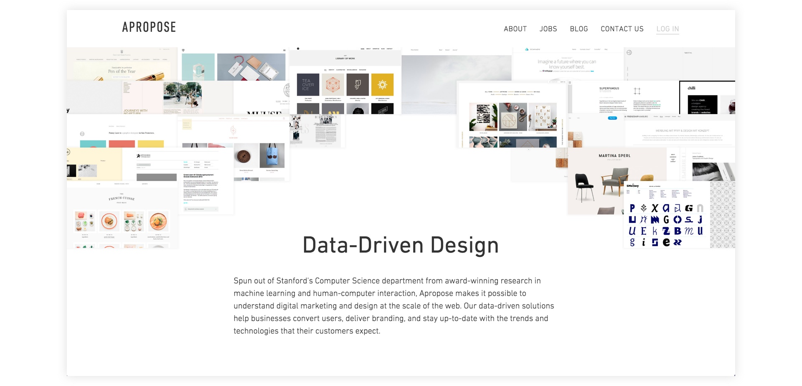
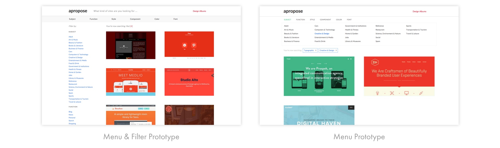

In 2013, a research paper titled Webzeitgeist: Design Mining the Web won the best paper award at CHI, the top conference in HCI (Human-Computer Interaction). The technology described in the paper promised to enable a new class of data-driven design applications. Seeing its potential, the researchers behind it at Stanford’s Computer Science department decided to co-found a company to bring the technology to real world problems.
I had read the paper in my HCI Research Topics class, and was curious about the possibilities with the technology. When I was looking for opportunities after Stanford, I was sure that I wanted to join an early-stage startup where I could apply a broad set of skills, and help figure out a product from the very beginning. In the Spring of 2014, I met with the founders and decided it was the right opportunity for me. After graduation, I joined Apropose as Lead Design Engineer, later became Director of User Experience, as well as the second employee. The company was then funded by NEA and Andreessen Horowitz.
I was the only one in the company that focused on design, and was responsible for almost everything that’s design-related. On the product design side, I planned and conducted user research, synthesized findings and made product decisions, collaborating with the Chief Product Officer and Director of Business Development. I created prototypes, which could be sketch mockups or fully functional web applications. I made detailed design specs for development. As we were short of engineering resources, I did a significant chunk of development, including architecting the front-end in the early days.
Another big part of my efforts was to establish our workflows and define rules to make the collaboration more efficient, and ensure the quality of design and implementation. I defined and maintained the style guide so that my designs were consistent, and the components were re-used. Accordingly I designed the structure of the CSS, so that implementation became easier and less likely to deviate from specs. The design critique sessions were reformatted to be more effective after some hard lessons learned. It was an ongoing effort for me and the product team to spot problems and find ways to improve our process.
The job was extremely challenging. First, there was the challenge for the whole company to find the right business model and product direction for the technology we developed. As we explored different models, I not only needed to take into account the user research findings, but also the business hypotheses we wanted to validate. Then, designing the product experience was hard. Since we were based on novel technology, we were exploring a completely uncharted space. Unlike a messaging app that already has standard design patterns, we were trying to make design data accessible and useful to people. According to various use cases, how to expose the handles into the data, and how to present the data, were hard questions to answer. Iterations of brainstorming, prototyping and testing were our way to try to find good solutions in the space.
Other than the high-level challenges, I also had to pick up a lot of the practical design skills myself. Stanford gave me great framework and theories to approach design problems, but the skills that ensure good execution were a bit lacking, such as applying good typography practices, developing a consistent visual style, designing UI transitions, etc. In my day-to-day job, I tried to learn and improve. I’ve made significant progress and am still learning.
Here are some screenshots of the design search and analytics platform we built:

Even though I was involved in two startup projects while at Stanford, this was much more of a complete startup experience. As an early employee, I got to participate in building out various parts of the company.
The first was building out the team. I was involved in the discussions of how we prioritize the roles to hire, what kind of people we wanted to bring on, how our hiring process should look like, etc. I designed interviews and exercises for design and front-end hires, conducted phone screens and on-site interviews. From the experience, I learned how to adapt my interaction style with different people, how to bring out their strengths and weaknesses and how to evaluate their potential.
We placed a lot of emphasis on defining the values and culture of the company. We believed that a lot of the decisions later would be easier to make and more consistent once we had defined them. One of the decisions influenced was how we structured the teams and how communication worked. We wanted efficient collaboration and open communication, so we designed flexible working groups, and mandatory one-on-ones to ensure issues, feedback could surface.
To me, the learning came from thinking deeply about the problems and being part of the process, as well as seeing the effect of the decisions as the company went through different stages. The first-hand experience offered me a much better idea of what doing a startup feels like and where the challenges lie.